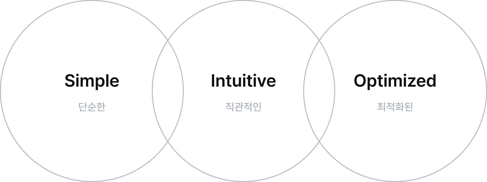
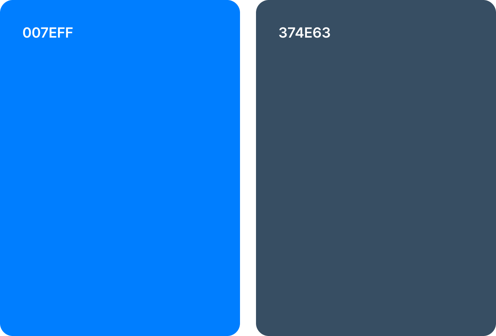
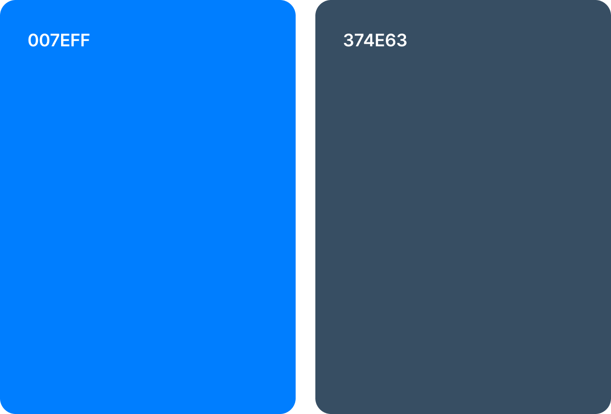

PROJECT GOAL
‘공짱CRM’은 산업단지 분양 및 영업 활동을 지원하는 전용 업무지원 시스템입니다.
기존 시스템은 기능은 우수했지만 사용성이 떨어졌고, 복잡한 UI로 인해 업무 효율이 낮다는 피드백이 있었습니다.
이에 따라 사용자의 불편을 해소하고, 직관적인 정보 전달을 위해 그래프 및 지도 기반의 시각화 중심 UI를
도입했습니다. 다양한 디바이스 환경에서도 최적의 경험을 제공하는 반응형 웹으로 구현했습니다.
DESIGN CONCEPT

단순하고 직관적인 구조를 기반으로, 다양한 기능을 최적화하여 사용성을 극대화했습니다.
전체적인 디자인은 직선적인 스타일을 유지하여 명확하고 신뢰감 있는 UI를 구현했습니다.
DESIGN ELEMENTS
 

신뢰성과 전문성을 강조하기 위해 브랜드의 블루 컬러를 주요 UI 요소에 반영했습니다.
Pretendard 폰트를 기반으로 깔끔하고 현대적인 사용자 경험을 제공합니다.